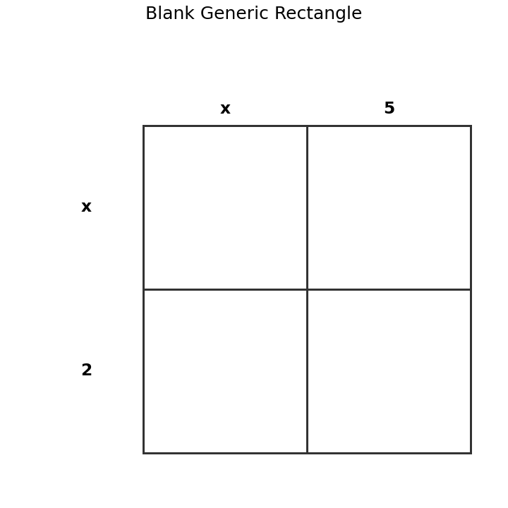
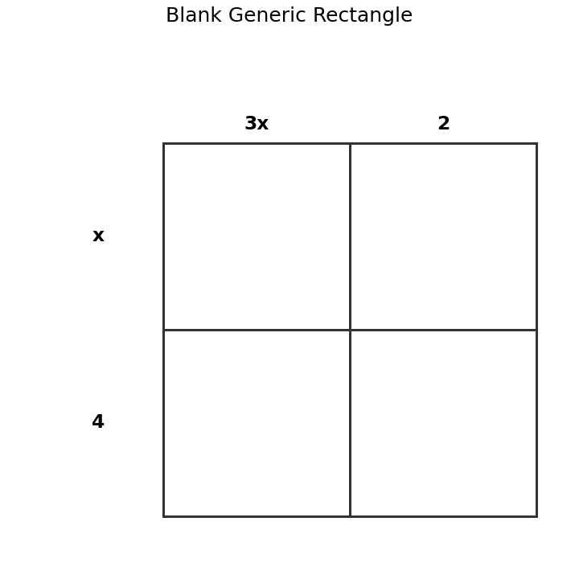

Identify the leading coefficient of $$7x^4-3x^2+8$$.
Complete the blank generic rectangle and write the expanded product.

Compare using distribution and using a generic rectangle to multiply $(3x+2)(x+4)$. Which method makes the structure clearer?

Create an error-analysis problem involving polynomial multiplication. Include the incorrect work, the misconception, and the corrected reasoning.
Identify the transformation in $g(x)=0.75f(x)$.
Identify the transformation in $g(x)=-4f(x)$.
What does vertical stretch mean in terms of output values?
What does reflection across the $x$-axis mean in terms of output values?
For $f(x)=|x|$, complete values for $g(x)=-2f(x)$.
| $x$ | -2 | -1 | 0 | 1 | 2 |
|---|---|---|---|---|---|
| $g(x)$ |
Describe how $y=-0.5|x|$ compares to $y=|x|$.
A student says multiplying by a negative number only makes the graph steeper. Critique the statement.
Create an equation that includes a reflection and a vertical compression of $f(x)=x^2$. Explain how someone could verify it using a table.
Identify the translation in $g(x)=f(x-5)+2$.
The vertex of $y=|x|$ moves to $(-6,3)$. Write a possible equation.
Why is it useful to track key points instead of drawing a transformed graph by guessing?
A graph was supposed to show $g(x)=f(x-2)+3$, but every point moved left 2 and up 3. Explain the error and revise the transformation.